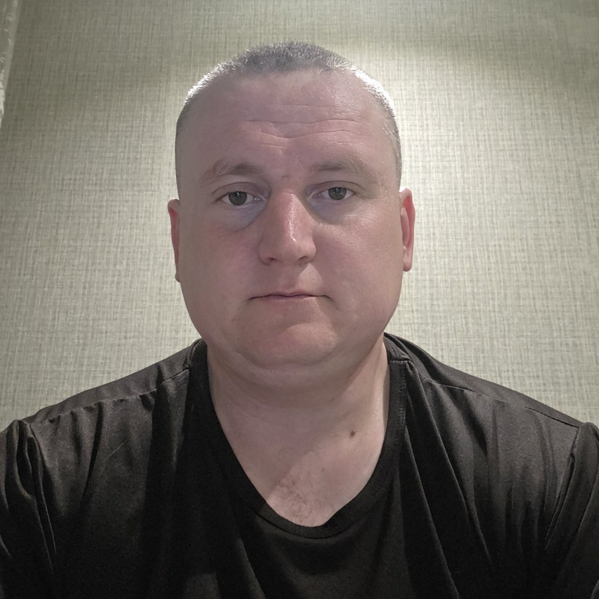

2016 год
Темиртауский высший политехнический колледж
Специальность «Эксплуатация машин и оборудования промышленности». Квалификация — техник-механик. Диплом получен 30 июня 2016 года.
Руководитель участка механизации АО «Карцемент». Профессиональный путь, жизненные ценности, семья, образование и путешествия.

Пахомов Дмитрий Васильевич родился 1 февраля 1987 года. Проживает в Республике Казахстан, Карагандинской области, в районе города Темиртау, посёлок Актау. Профессиональная деятельность связана с промышленным производством, эксплуатацией и техническим обслуживанием машин и оборудования, организацией работы участка механизации.
Семья занимает важное место в моей жизни. Супруга — Пахомова Наталья Владимировна (девичья фамилия Тычинина). Дата заключения брака — 23 ноября 2012 года. Детей нет. Семья, взаимное уважение и поддержка — важные жизненные ориентиры.
Специальность «Эксплуатация машин и оборудования промышленности». Квалификация — техник-механик. Диплом получен 30 июня 2016 года.
Обучение по направлению «Механика и металлообработка» (B064), программа бакалавриата. Продолжение профессионального образования в области техники и промышленности.
Работаю в АО «Карцемент» начальником участка механизации. До руководящей должности работал механиком. Моя работа связана с организацией эксплуатации промышленной и карьерной техники, техническим обслуживанием, ремонтом и координацией производственных задач.
Планирование использования техники, распределение задач и взаимодействие с производственными подразделениями.
Контроль исправности оборудования, организация технического обслуживания и своевременного ремонта.
Согласованная работа специалистов, производственная дисциплина и ответственное отношение к технике.
В работе используются карьерные самосвалы БелАЗ, фронтальные и вилочные погрузчики, бульдозеры и другая специализированная техника.
Путешествия в Шарм-эль-Шейх в 2025 и 2026 годах. Красное море, отдых и новые впечатления.
Стамбул, 2026 год: исторические достопримечательности, Босфор и прогулки по городу.
Ознакомительный полёт на самолёте Cessna 206 над Карагандинской областью в 2026 году.
Публикации о профессиональной деятельности, путешествиях и событиях жизни.